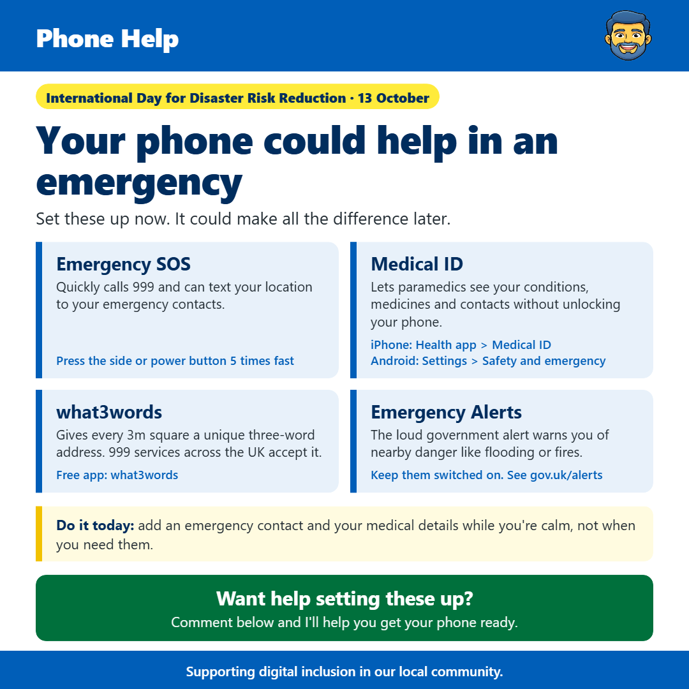

Your phone could help in an emergency

Hi everyone, today is the International Day for Disaster Risk Reduction, so I wanted to share a few features on your phone that could really help in an emergency. They only take a few minutes to set up, and it's much easier to do it now while you're calm than when you actually need them.
Most phones have an Emergency SOS feature. If you press the side or power button five times quickly, your phone will call 999 for you, and it can also send a text with your location to your emergency contacts. It's worth checking it's switched on and adding at least one emergency contact. On an iPhone, look in Settings under Emergency SOS. On Android, look in Settings under Safety and emergency.
While you're there, it's a good idea to fill in your Medical ID. This lets paramedics see important information like your medical conditions, any medicines you take, allergies and who to contact, even if your phone is locked. On an iPhone, open the Health app and tap Medical ID. On Android, go to Settings, then Safety and emergency, then Medical information.
The free what3words app is also worth having. It divides the whole world into 3 metre squares and gives each one a unique three-word address. If you ever need help somewhere without a proper address, like a country park, a footpath or a big car park, you can give your three words to the 999 operator and they'll know exactly where you are. Emergency services across the UK accept them.
You may also remember the loud Emergency Alert test that went off on phones a while ago. These alerts are used to warn people about nearby danger, like severe flooding or fires, so it's best to keep them switched on. You can find out more at gov.uk/alerts.
If you'd like help setting any of this up, just comment below and I'll do my best to help.
I hope this helps, and feel free to pass it on to anyone who might find it useful.